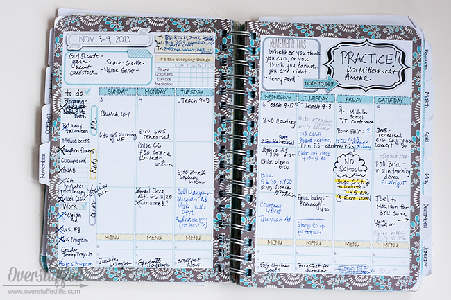
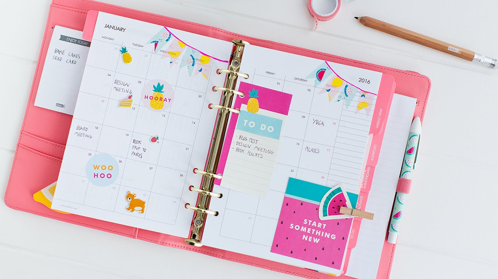
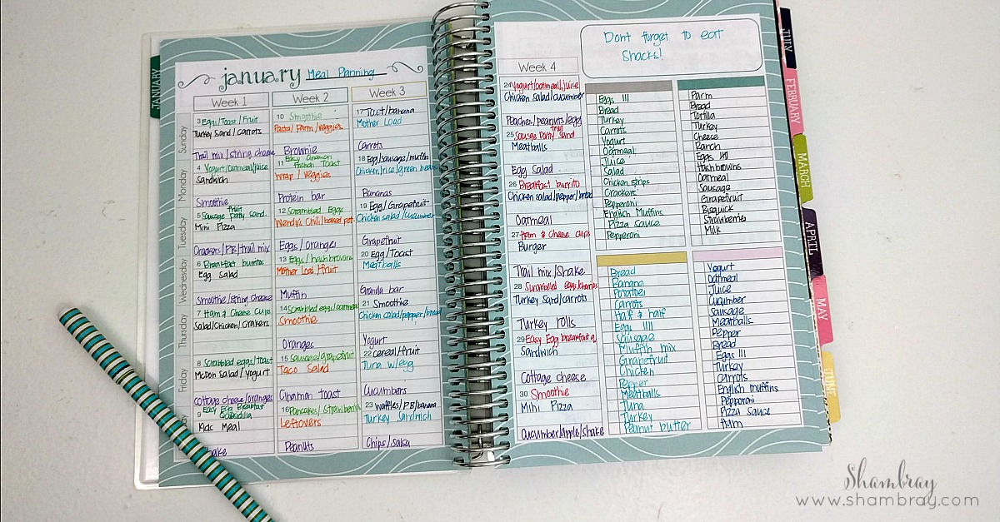
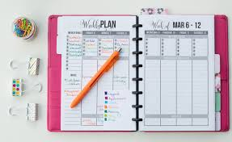

Hello Welcome To My Website! I'm Tara, a seventh grader going to middle school. I want be a software engineeer, but it takes a whole lot of school before that comes. So what should I do while I wait? STUDY! :)
Getting Started    
If you want to stay organized, the first thing you should do is go out and buy a planner! At first it may seem unusual, but you'll find yourself using it more once you get used to it! If you already have one and are confident in your planner abilities then congrats! Step 1 has been completed, if not here's how to use your planner!;) Planners are customizable and can be changed to your liking! There's no correct way to use it, but some people might get carried away decorating it, than actually considering its purpose. A planner is designed to help you keep track of your daily activities, goals, or homework. You should keep that in mind when writing in your planner!
Supplies: I recommend buying colorful pens and tabs for your planner! Tabs can be used to mark months or holidays, they make finding things easier and faster! Talking about finding things, colorful pens can make words stand out just like a highlighter! Each pen could mean something different. For example, red pens could mean something important, and blue pens can mean long-term assignments!